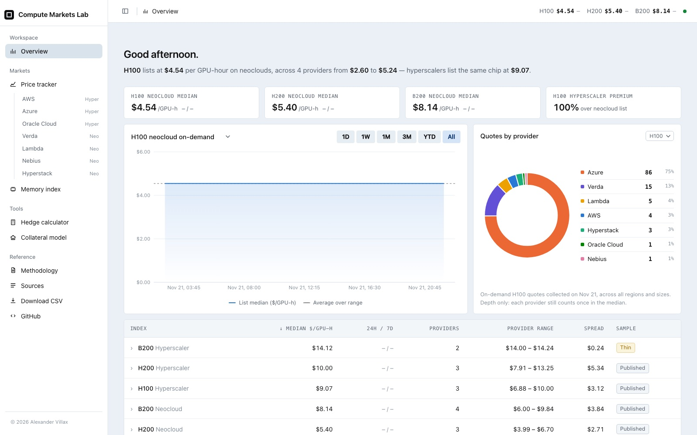
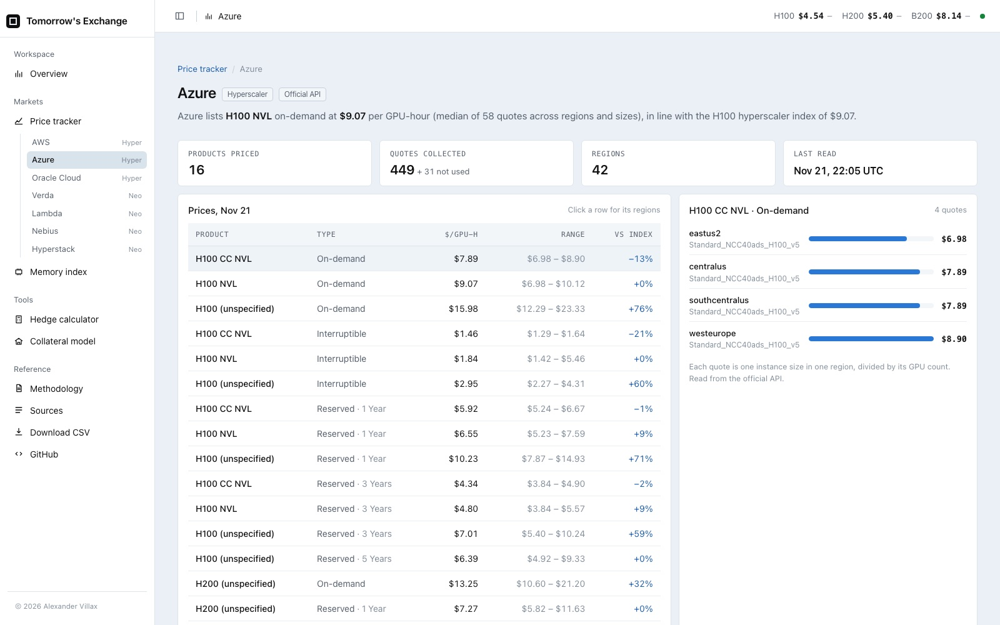
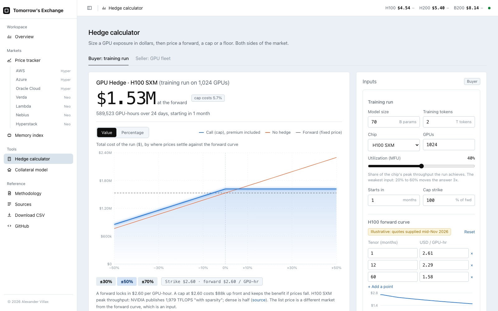
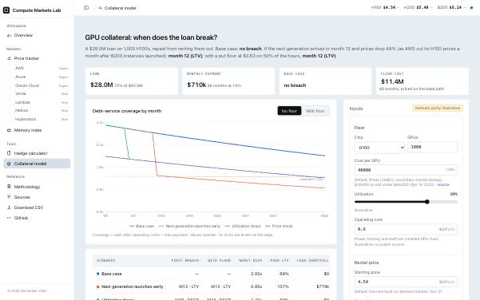
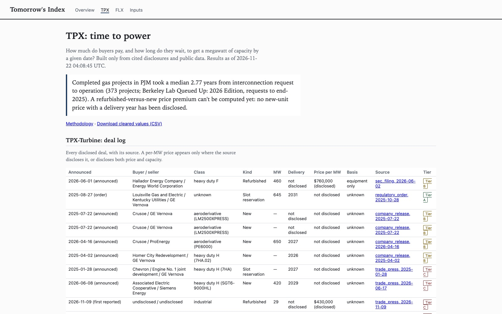

Software · Nov 2026
Tomorrow's Exchange
An independent price index and toolkit for the GPU compute market: what a GPU-hour costs, how far apart providers are, and what it costs to hedge, finance and plan around it. Prices updated through the day.
- 7providers, each checked against its terms before use
- 650price quotes a day, every one kept with its source
- $2.60–$5.24one H100, four neoclouds: the basis a hedge carries
- 130automated tests on the index, pricing and lending math
Compute is becoming a traded commodity. Labs sign multi-year capacity deals, neoclouds borrow against their GPUs, and the first over-the-counter GPU hedges were written in 2026. Every one of those trades needs a price everyone trusts. Tomorrow's Exchange is my attempt at the whole stack in miniature: an independent GPU price index built only from sources whose terms allow it, a calculator that prices hedges for both buyers and sellers of compute, a lender's model of GPU-backed loans, and a study of why the next commodity, memory, cannot be indexed yet. Every number on the platform can be rebuilt from the stored files.
01What it is
The market. GPU time is turning into a commodity. Labs and neoclouds sign capacity contracts worth billions, lenders finance GPU fleets against the hardware, and in 2026 the first over-the-counter hedges on GPU prices were written. A commodity market runs on a reference price: the number contracts settle against. For compute, that price is young, mostly proprietary, and the first question any buyer asks of it is the same one: how close is it to what I actually pay?
What I built. A small, working version of the whole stack, under one name. It answers four questions a salesperson in this market gets every day:
- What does a GPU-hour cost? An independent index of public list prices for H100, H200 and B200, by provider tier, with every provider's price one click away.
- What does it cost to hedge? A calculator for both sides: a lab sizing a training run and pricing a cap, and a GPU owner measuring revenue at risk and pricing a floor.
- When does a GPU loan break? A lender's model of a loan secured on GPUs, stressed with a real event: a new generation repricing the old one.
- What comes next? Why HBM, the memory beside every accelerator, has no price to index, and what a DRAM index would look like.
Why one platform. These are the same conversation from four seats: the index is what a hedge settles on, the calculator is what a buyer or seller does with it, the lender is who finances the hardware underneath, and memory is the next market to need the same thing.
02The price index
Sources, chosen by their terms. Before collecting anything I read the terms of service of more than twenty providers. Most marketplaces and several neoclouds prohibit automated collection or building a benchmark from their prices, including some of the best-known names, so they are out until they give written permission. Seven made the cut: AWS, Azure, Oracle and Verda through official pricing APIs, and Lambda, Nebius and Hyperstack read automatically from their public pricing pages.
Normalization. Every quote becomes USD per GPU-hour. A provider listing the same product in thirty regions is collapsed to one median first, so it counts once. Chip variants (SXM, PCIe, NVL), pricing types (on-demand, spot, reserved) and tiers (neocloud, hyperscaler) are never mixed. A series needs three providers to be published; below that it is marked thin. Gaps are never filled.
What it shows. On 21 November 2026 an on-demand H100 listed from $2.60 to $5.24 across four neoclouds, a median of $4.54, and about twice that at hyperscalers. Anyone priced off the median but buying from one provider carries up to $1.94 per GPU-hour of basis. On a 1,000-GPU fleet running all year, $1 per GPU-hour is $8.8 million. That gap is the first objection to any index-settled hedge, and the index puts a number on it.
Built to be audited. Each provider has its own page with every product, the regional quotes behind each price, how far it sits from the index, and how it is collected. Every quote is stored with its source and read time, and the methodology is written the way a benchmark administrator would write it.


03Hedging both sides
Buyer. A lab planning a training run enters the model size, tokens, chip, GPU count and utilization. Training compute is six times parameters times tokens; dividing by what the chip actually delivers gives GPU-hours. A 70-billion-parameter model on 2 trillion tokens with 1,024 H100s is about 590,000 GPU-hours, $1.53 million at the forward curve. A cap at today's forward price costs about $88,000, under 6% of the run.
The first problem is quantity, not price. Utilization is the weakest input: the same run costs $3.05 million at 20% and $1.02 million at 60%. Before hedging price, a buyer has to pin down how many GPU-hours they are hedging.
Seller. A neocloud enters its fleet, utilization and how much is already contracted. Only the uncontracted hours are exposed. For 2,000 H100s with 60% contracted, a 30% price fall takes $4.4 million off a year's floating revenue; a floor 10% below the forward costs about $1.15 million and keeps the upside.
A detail that matters. NVIDIA quotes Tensor Core throughput "with sparsity". The dense figure, which training actually reaches, is half. Using the headline number would understate every GPU-hour estimate by a factor of two. Every chip figure on the platform cites the NVIDIA datasheet it came from.

04Financing the hardware
The lender's question. Neoclouds finance GPU fleets with loans secured on the GPUs and repaid from renting them out. The model runs such a loan month by month: rental price, cash after operating costs, the loan payment, coverage, and the GPUs' value against the balance.
The event that breaks it. When AWS launched B200 instances in May 2025, it cut its H100 prices 44% a month later. Put that step into a four-year, $28 million loan on 1,000 H100s and the loan breaches its loan-to-value covenant in the same month, while the borrower is still paying. A put floor on half the hours removes the cash shortfall, but not the covenant breach: the hedge has to be sized to the covenant, not only the cash.
What the data said. I collected every dated list price I could find from archived pricing pages. They did not decay smoothly: Lambda's H100 went from $2.59 in 2023 to $4.59 today. Real declines come as discrete cuts. Meanwhile the largest owners depreciate GPUs over five to six years in their filings, while a new NVIDIA generation arrives about every two. That gap is the risk a lender is pricing.

05The next market: memory
HBM has no price. The memory stacked beside every accelerator is made by three companies and sold on negotiated multi-year contracts; SK hynix says its volumes are sold out through 2029, and prices are set once a year. There is no spot market to observe. That is a finding, not a gap.
DRAM does. Commodity DRAM trades daily and competes with HBM for the same wafers. The platform sets out a DRAM spot index design, and the case for a memory hedge: memory is now about a third of a PC's cost and tied to billions of hyperscaler capex, and nobody hedges it financially yet.
Asked, not scraped. The only free daily DRAM prices come from one source whose terms require written consent to publish. So the index design is public, and the permission request has gone first.
06Part two: Tomorrow's Index
After compute, the bottlenecks. GPUs now have a price. What limits the AI build-out next mostly does not: how long it takes to get power, what a flexible load is worth, what a grade of model intelligence costs. Tomorrow's Index is a family of research benchmarks for those, built on the same rules as the exchange: every value sourced, timestamped and checked against its publisher's terms.
FLX, flexibility. What it is worth for AI load to move between places or hours, from hourly power prices. Being able to move 1 MW of AI load between California (CAISO NP15) and Texas (ERCOT North) was worth $58,351 in 2025 on day-ahead prices, net of switching costs: $230,220 for the year against $288,571 at the cheaper hub alone, in 625 moves. Switching off in only the priciest 87 hours at ERCOT North would have saved $17,809.
TPX, time to power. Turbine deals, manufacturer backlogs and grid queues. Completed gas projects in PJM took a median 2.77 years from interconnection request to operation (373 projects, Berkeley Lab).
Only what may be published. CAISO cleared publishing statistics derived from its prices, in writing and with credit; its raw prices stay private. Results from grid operators that have not cleared publishing are computed but withheld, and the page says so. The data refreshes daily.


07How I built it
- Collector. Python, run by GitHub Actions about every 30 minutes. Each source is a small module that turns a provider's format into the same quote record. AWS publishes a 300 MB price file per region, so the collector checks a 19 KB index and downloads a file only when AWS publishes a new version.
- Data on file. Every quote, eligible or not, is committed to the repository with its source and read time. The index is rebuilt from those files every run, so any number can be reproduced.
- Finance library. Black-76, forward-curve interpolation, monthly hedge strips and the loan model live in one Python package with 105 tests, including a textbook option value, put-call parity and a standard annuity value.
- Platform. React and TypeScript, deployed to GitHub Pages. The browser runs a port of the Python math, and the tests check it against values the Python code generates, so the two cannot drift apart. Pages read the data straight from the repository and re-check every minute.
- Problems the checks caught. An Azure price list labelled Windows as “Win”, which would have counted Windows prices as Linux. A modelling choice that charged four years of hedge premium in one month. And GitHub's scheduler running only 2 of 18 hourly collections, fixed by moving to quieter minutes.
The repository is private; code, data and methodology are available on request.
08Limits
- These are list prices: what providers ask, not what anyone paid. Negotiated and reserved deals are mostly unpublished.
- Seven providers, unweighted. The largest marketplaces are excluded until they grant permission.
- History starts on 21 November 2026; changes over a day, week or month appear as the data accumulates.
- Forward curves, volatility, operating costs and loan terms are inputs, labelled as such where no public source exists.
- Not a benchmark, not advice, and not for settling contracts.